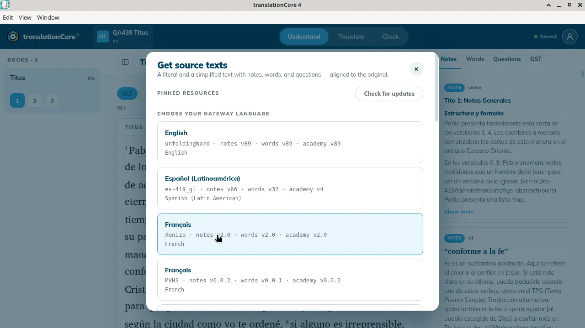
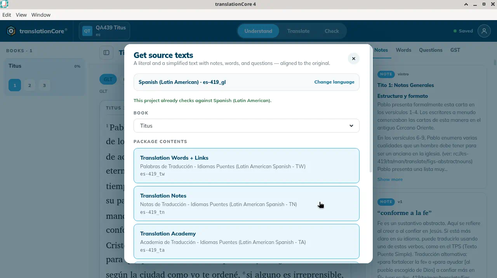
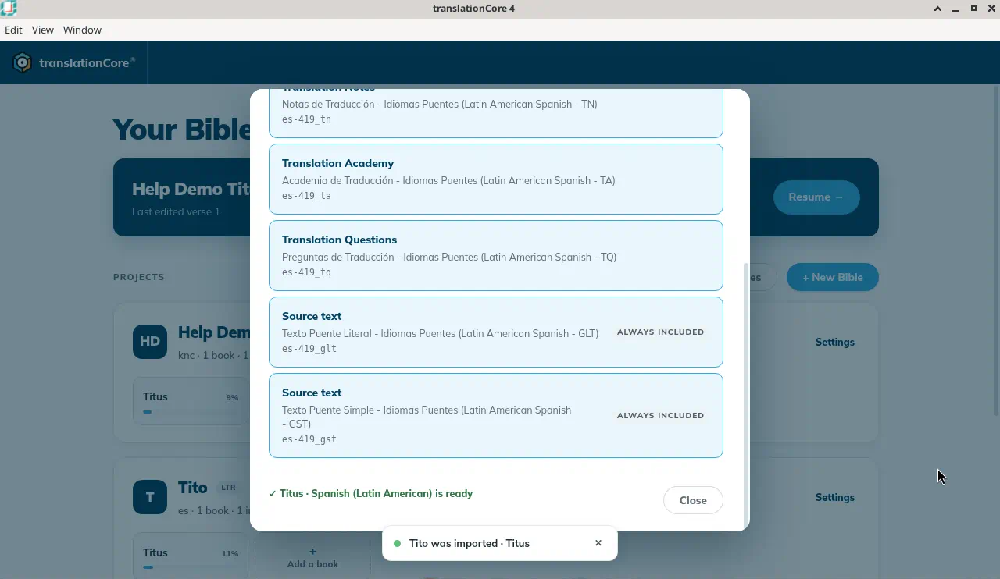
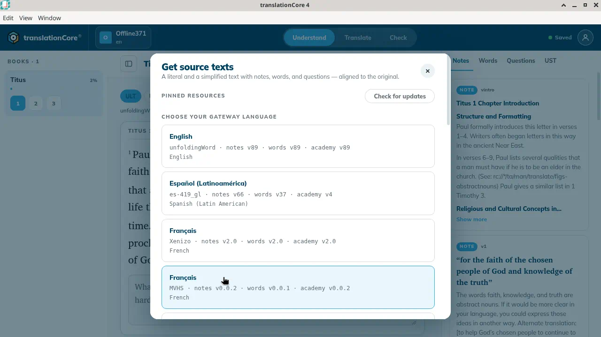
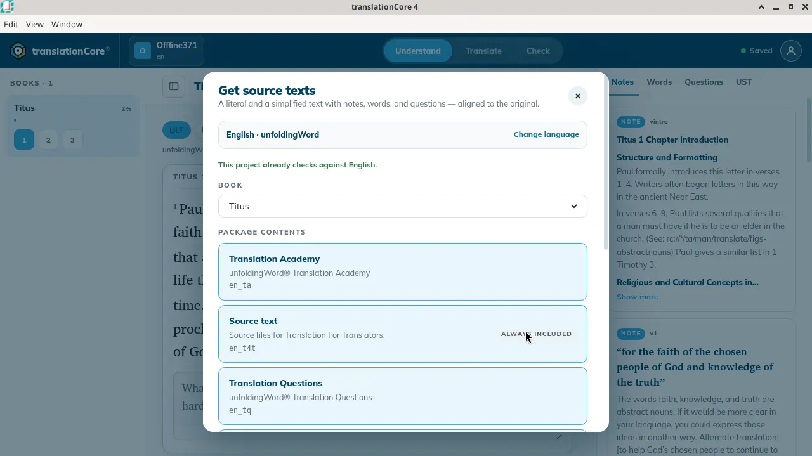
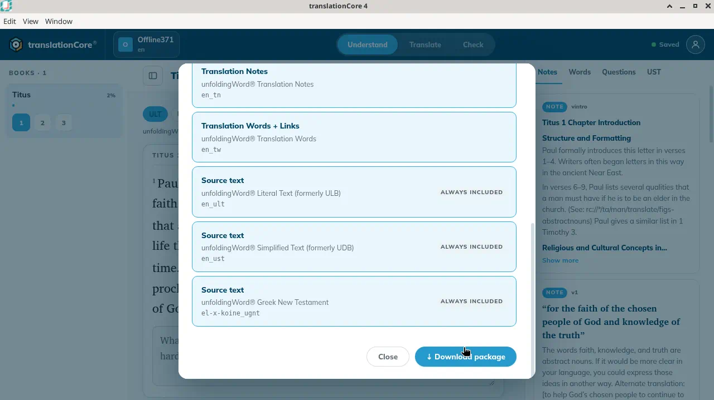

Download source texts
Download source texts and helps for another gateway language from Door43.
Where in the app: Inside a project: Project settings › Manage source texts → › Get source texts
What it is
A gateway language is the language your team reads the source in. English is included. Other gateway languages can be downloaded from git.door43.org.
When to use it
When your team wants to read and check in a gateway language other than English, or a resource is missing.
Step by step
- Open the project, open Project settings, then click Manage source texts →. Home no longer has a Source texts button.
- If the dialog says the app is offline, click Go online (see Working offline).
- Under Choose your gateway language, pick a language and organisation.
- Wait for "Reading the catalogue from git.door43.org…".
- Choose a Book.
- Check the Package contents. Selected cards are highlighted. Click a card to leave it out, or click it again to add it back.
- Click ⇣ Download package. Progress shows "Downloading {repo}…".
- When you see "✓ {book} · {language} is ready", click Close (or the round × at the top right).
What you should see
- The dialog Get source texts says "A literal and a simplified text with notes, words, and questions — aligned to the original."
- After picking a language: Book, Package contents as a list of cards (selected cards are highlighted; Always included cards cannot be left out) and ⇣ Download package.
- When done: "✓ {book} · {language} is ready".
Screenshots

Screenshot comingThe Get source texts dialog with the gateway language list
img/rs-source-texts-1.png
Screenshot comingSpanish (Latin American) package contents for Titus. The project already checks against that language, so no download button is shown.
img/rs-source-texts-2.png
Screenshot comingThe message after the download: "✓ Titus · Spanish (Latin American) is ready"
img/rs-source-texts-3.png
Screenshot comingSample English, Get source texts. Pinned resources with Check for updates. Languages: English (unfoldingWord, notes v89), Español (Latinoamérica), and two rows both named Français (Xenizo and MVHS). Nothing was downloaded.
img/rs-source-texts-4.png
Screenshot comingEnglish · unfoldingWord for Titus. The line says This project already checks against English. Visible cards: Translation Academy (en_ta), Source text en_t4t marked Always included, Translation Questions (en_tq). Nothing was downloaded.
img/rs-source-texts-5.png
Screenshot comingBottom of the English Titus package. Notes en_tn, Words en_tw, and three Always included source texts: en_ult, en_ust, and the Greek New Testament. Close and Download package are both shown.
img/rs-source-texts-6.pngTips
- Each language row names the organisation and the published notes, words, and academy versions. On Sample English the English row was "unfoldingWord · notes v89 · words v89 · academy v89". Español (Latinoamérica) was es-419_gl, notes v66, words v37, academy v4. Two rows are both named Français: Xenizo (notes v2.0) and MVHS (notes v0.0.2). Neither was opened.
- To use the downloaded language for checking, open Project settings and choose it under Checking language. See Change the checking language. A separate Use for checking step was not how the language was chosen.
- The versions shown next to each language in the list (for example "notes v89 · words v89 · academy v89" for English) are the latest releases published on Door43. They are not the versions your project uses. A checking tool shows the version it uses under its filters, for example "en_tn · v86".
Known limits
- Needs internet.
- Pinned resources, on this open, was a heading with Check for updates. The pinned list itself was not shown.
- Two gateway rows can share one language name. Both French rows say Français. The organisation name under the title is what tells them apart.
- Opening English on Sample English says "This project already checks against English." The book is Titus. Change language is at the top. The package cards are Translation Academy (en_ta), Translation Questions (en_tq), Translation Notes (en_tn), and Translation Words + Links (en_tw). Four source-text cards are marked Always included: en_t4t ("Source files for Translation For Translators."), en_ult ("unfoldingWord Literal Text (formerly ULB)"), en_ust ("unfoldingWord Simplified Text (formerly UDB)"), and the Greek New Testament (el-x-koine_ugnt). Close and Download package are both at the bottom. The "already checks" line does not hide Download package. Nothing was downloaded.
- Some organisations publish nothing tC4 can use for a book: "This organisation publishes nothing tC4 can use for {book} in {lang}."
- If some downloads fail, the dialog lists them: "Some resources did not install — …"